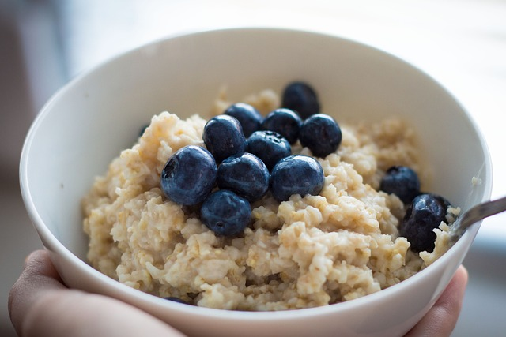

Preheat oven to 375 degrees. In a small bowl, combine cream cheese, sugar, flour and vanilla. Set aside.
Pop open crescent roll dough and unroll, leaving crescents in rectangles. On an ungreased baking sheet, lay the crescent roll rectangles together, lining them up width wise. Dough should be almost the entire length of a half sheet pan.
Press edges together to even out edges and seal any holes. Carefully spread cream cheese filling down the center of the dough to be about 2-3 inches wide. Cut 1/2 inch diagonal strips up each side of the dough. Fold 1/2 inch dough pieces up over filling alternating sides to get a braided pattern. You may have excess dough once you reach the end of the danish, so fold them in as best as you can. Bake for 20-30 minutes or until filling is set and crescent dough is golden in color. Cool before removing from baking sheet.
Once danish has cooled, remove to serving platter. In a small bowl, mix together powdered sugar, vanilla and cream to create icing. You may need to add more cream to get the desired consistency. Drizzle icing over danish.
Cut into pieces and serve.
Cereals
Plain Oatmeal

Ingredients
½ cup old fashioned rolled oats
1 cup water or milk
pinch of sea salt
Steps
Add oats, water or milk, and salt to a pot or saucepan over medium/high heat.
Bring mixture to a low boil, reduce heat to a low simmer and continue to cook for about 5-7 minutes; stirring occasionally. Oatmeal is ready when the oats have soaked up most of the liquid and are creamy.